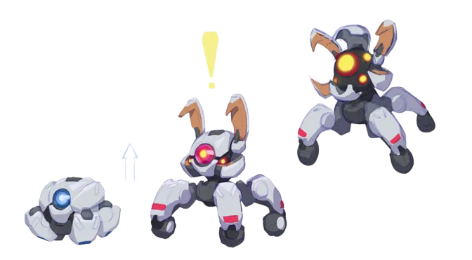
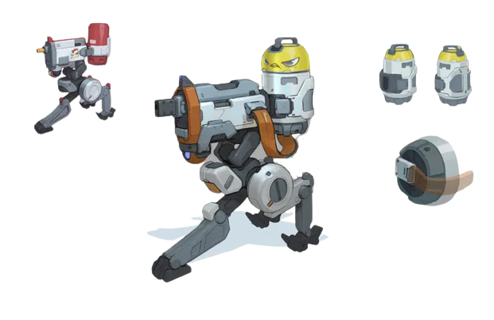

K I L L J O Y
Killjoy, uma alemã genial, defende o campo de batalha facilmente usando seu arsenal de invenções.
Se o dano causado por seu equipamento não der cabo dos inimigos, os efeitos negativos de seus queridos
robôs dão conta do recado.
HABILIDADES ESPECIAIS
- Q - ROBÔ DE ALARME
EQUIPE um Robô de Alarme oculto. DISPARE para ativar um robô que persegue os inimigos que entram no alcance.
Ao se aproximar do alvo, o robô explode, causando dano e aplicando Vulnerável. SEGURE EQUIPAR para retirar um robô ativado.

- E - TORRETA
EQUIPE uma Torreta. DISPARE para ativar uma torreta que atira em inimigos em um cone de 180°.
SEGURE EQUIPAR para retirar a torreta ativada.

- C - NANOENXAME
EQUIPE uma granada Nanoenxame. DISPARE para lançar a granada. Ao atingir uma superfície, a Nanoenxame fica oculta.
ATIVE a Nanoenxame para acionar um enxame de nanorrobôs que causam dano.
- X - ULTIMATE CONFINAMENTO
EQUIPE o dispositivo de Confinamento. DISPARE para ativá-lo. Após um longo processo de ativação, o dispositivo detém todos os inimigos no raio de alcance.
O dispositivo pode ser destruído pelos inimigos.
OUTRAS INFORMAÇÕES
- Killjoy pertence a classe Sentinela dentro do jogo VALORANT
- Killjoy foi a 8° (oitava) agente lançada
- Foi lançada dia 4 de agosto de 2021, com o fim do Passe de Batalha do Ato 1
CRIADO POR: Ana Flávia de Brito Fernandes